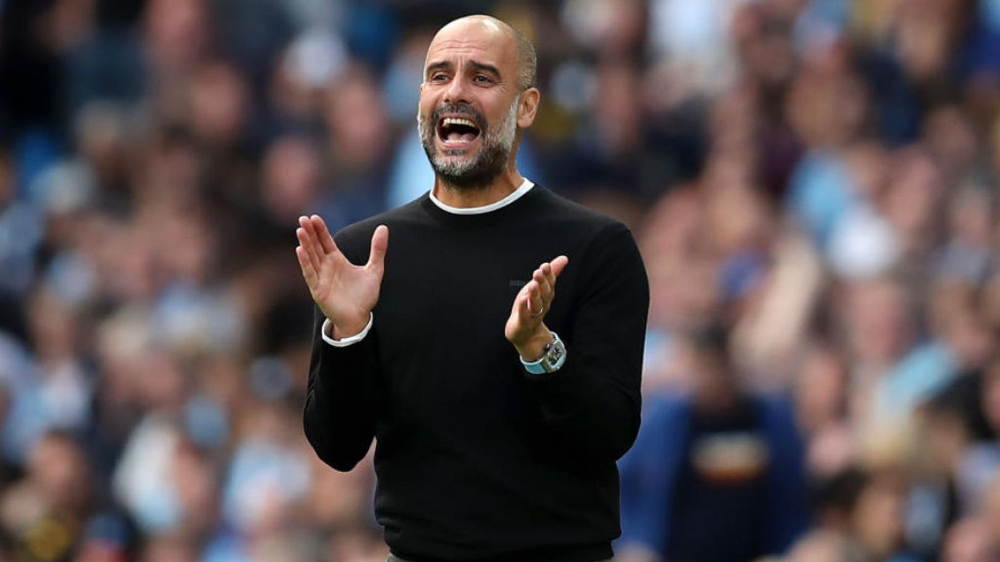

펩 과르디올라 감독
주제프 과르디올라 이 살라(Josep Guardiola i Sala, 1971년 1월 18일 ~ )
과거 스페인의 축구 선수이며, 페프 과르디올라(Pep Guardiola)로 익히 알려져있다.
그는 현재 프리미어리그의 맨체스터 시티의 감독이다. 그는 선수 생활의 대부분을
바르셀로나에서 보냈지만,
브레시아, AS 로마, 알아흘리 도하, 도라도 데 시날로아에서 선수 생활을 하기도 했다.
과르디올라는 스페인과 카탈루냐 두 대표팀에서 뛴 바 있다.
은퇴 후, 그는 바르셀로나 아틀레틱의 감독이 되었다.
2008년 5월 8일, 바르셀로나의 구단주인 주안 라포르타는 프랑크 레이카르트의 뒤를
이어 그를 새 감독으로 선임했고,
그는 감독을 맡은 첫 시즌에 프리메라리가,
코파 델 레이, 챔피언스리그에서 바르셀로나를 우승으로 이끌었다.
2016-2017 시즌부터 맨체스터 시티 FC 감독을 맡고 있다.